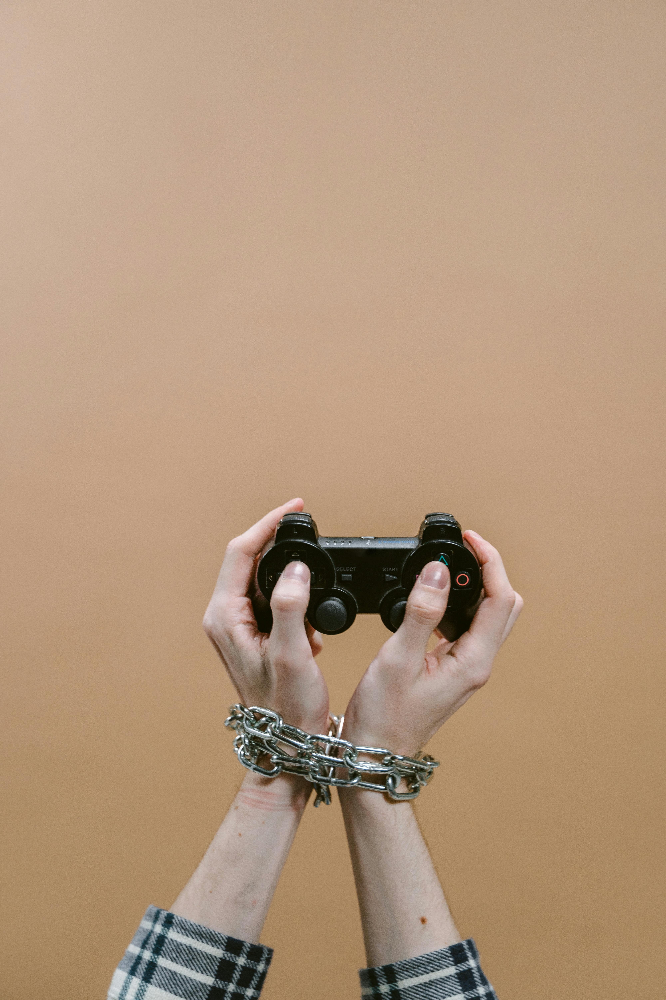

Arrêter mon horrible addiction au jeu vidéo
par u/Old_Physics8637 sur la plateforme reddit
Après être tombé lourdement, TRÈS lourdement, accro à League of Legends, j'en ai enfin fini avec ça. J'ai joué pendant plus de 7 ans et en combinant tout le temps sur mon ordinateur, j'ai dû passer plus d'un an au total à jouer/regarder League. Cela a ruiné des relations, mes notes, et globalement toute ma putain de vie. Je peux enfin admettre que je suis accro, mais j'ai besoin d'un changement. Après avoir fait une pause dans mes études, je suis revenu ce semestre de printemps et j'ai réussi mes cours, mais je n'ai pas fait aussi bien que je le voulais. Le semestre prochain, j'ai des cours de chimie en troisième année extrêmement difficiles et je sais que je ne vais pas réussir si je laisse cette addiction continuer à diriger ma vie. Merde à ça. J'en ai enfin fini. Surtout quand certains de mes autres amis en ligne ont commencé à me pousser à monter de rang, alors que franchement, qui s'en fout. J'ai un rêve à protéger et je n'ai pas encore commencé. Je viens maintenant différemment 😈.
